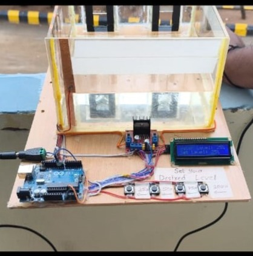
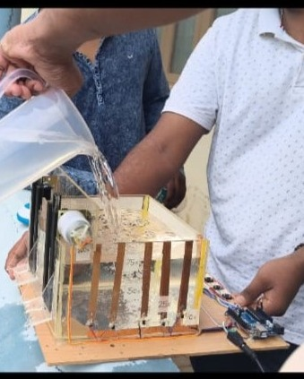

PROJECT 01
Automated Dam Gate Actuation System
An automated system designed to control dam gate operation based on water-level conditions, helping improve water-flow management and reduce the need for manual gate operation.


Overview
An automated system designed to control dam gate operation based on water-level conditions, helping improve water-flow management and reduce the need for manual gate operation.
Procedure
The system begins by monitoring the water level using a sensing mechanism. The measured condition is processed by the control system, which determines when the dam gate needs to be actuated. The actuator then operates the gate according to the programmed control logic, demonstrating automated water-level-based gate operation.
FocusAutomation and control
SystemWater-level based actuation
Practical ExperienceCircuit building, analysis and prototyping